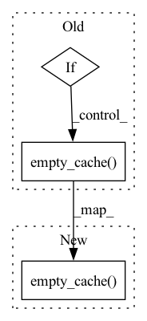

Pattern ID :36660
Before Change
regplot(true, pred, show=False)
plt.savefig(os.path.join(self.path, f"{name}_regplot.png"))
if self.use_cuda:
torch.cuda.empty_cache()
gc.collect()
return pred
def _eval(self, x, y=None, batch_size=None):After Change
plt.savefig(os.path.join(self.path, f"{name}_regplot.png"))
//if self.use_cuda:
torch.cuda.empty_cache()
gc.collect()
return pred
def _eval(self, x, y=None, batch_size=None):In pattern: SUPERPATTERN
Frequency: 4
Non-data size: 3
Instances Fragment ID: 104724324
Project Name: atrcheema/dl4seq
Commit Name: c7392282434d0037090fa66209c0152d98805bf3
Time: 2022-04-21
Author: ather_abbas786@yahoo.com
File Name: ai4water/models/torch/pytorch_training.py
M Class Name: Learner
N Class Name: Learner
M Method Name: predict(6)
N Method Name: predict(6)
M Parent Class: AttributeContainer
N Parent Class: AttributeContainer
M File Name: ai4water/models/torch/pytorch_training.py
N File Name: ai4water/models/torch/pytorch_training.py
M Start Line: 287
M End Line: 293
N Start Line: 287
N End Line: 292
Before Change
state["server_chunk_size"] = state[
"corrected_tensor_size"] // self.size
if not self.initialize or (self.adam_freeze_key
and "worker_error" not in state.keys()):
torch.cuda.empty_cache()
state["worker_error"] = torch.zeros(state["corrected_tensor_size"],
device=p.device)
state["server_error"] = torch.zeros(state["server_chunk_size"],
device=p.device)
torch.cuda.empty_cache()
self.adam_freeze_key = True
if not self.initialize and torch.distributed.get_rank() == 0:
print("Cupy Buffers Initialized Successfully.")
After Change
device=p.device)
state["server_error"] = torch.zeros(state["server_chunk_size"],
device=p.device)
torch.cuda.empty_cache()
self.adam_freeze_key = True
if not self.initialize and torch.distributed.get_rank() == 0:
print("Cupy Buffers Initialized Successfully.")
Fragment ID: 104724327
Project Name: microsoft/deepspeed
Commit Name: b80e5624e2823e3ad4a0bd625716eeb24921c6c9
Time: 2022-03-10
Author: yl2967@cornell.edu
File Name: deepspeed/runtime/fp16/onebit/adam.py
M Class Name: OnebitAdam
N Class Name: OnebitAdam
M Method Name: step(3)
N Method Name: step(3)
M Parent Class: torch.optim.Optimizer
N Parent Class: torch.optim.Optimizer
M File Name: deepspeed/runtime/fp16/onebit/adam.py
N File Name: deepspeed/runtime/fp16/onebit/adam.py
M Start Line: 163
M End Line: 192
N Start Line: 163
N End Line: 191
Before Change
_LOGGER.info("Running OBS Pruning")
torch.cuda.empty_cache()
if self._scorer._is_main_proc:
self._pre_step_completed = True
self._scorer._enabled_grad_buffering = True
to_apply_sparsities = self.get_applied_sparsity_for_epoch(
epoch, steps_per_epoch
)
last_applied_sparsities = (
self._last_applied_sparsity
if isinstance(self._last_applied_sparsity, List)
else [self._last_applied_sparsity] * len(to_apply_sparsities)
)
for i in range(1, self._num_recomputations + 1):
self._collect_grad_samples(module, self._grad_sampler)
recomputation_sparsity = [
interpolate(
i,
0,
self._num_recomputations,
start_sparsity,
target_sparsity,
)
for start_sparsity, target_sparsity in zip(
last_applied_sparsities, to_apply_sparsities
)
]
super().check_mask_update(
module,
epoch,
steps_per_epoch,
recomputation_sparsity=recomputation_sparsity,
)
torch.cuda.empty_cache()
self._scorer._enabled_grad_buffering = False
self._last_applied_sparsity = to_apply_sparsities
def _get_mask_creator(After Change
recomputation_sparsity=recomputation_sparsity,
)
torch.cuda.empty_cache()
self._last_applied_sparsity = to_apply_sparsities
if self._scorer._is_main_proc:
self._scorer._enabled_grad_buffering = False
Fragment ID: 104724323
Project Name: neuralmagic/sparseml
Commit Name: ef277e510abe0475ce3ffea5e29c9b226a970549
Time: 2023-01-06
Author: eldar.ciki@gmail.com
File Name: src/sparseml/pytorch/sparsification/pruning/modifier_pruning_obs.py
M Class Name: OBSPruningModifier
N Class Name: OBSPruningModifier
M Method Name: check_mask_update(4)
N Method Name: check_mask_update(4)
M Parent Class: BaseGradualPruningModifier
N Parent Class: BaseGradualPruningModifier
M File Name: src/sparseml/pytorch/sparsification/pruning/modifier_pruning_obs.py
N File Name: src/sparseml/pytorch/sparsification/pruning/modifier_pruning_obs.py
M Start Line: 262
M End Line: 301
N Start Line: 259
N End Line: 299